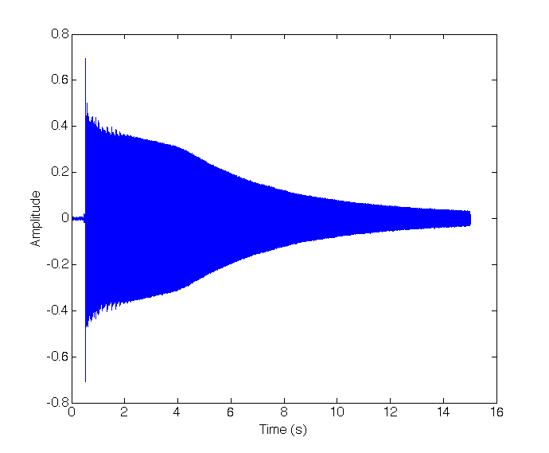
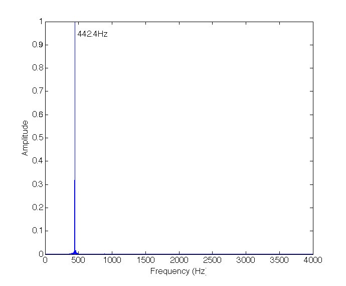

Fourier Transform
Fourier analysis is a central tool in signal processing. It provides a representation in the frequency domain of the signal which is usually given in the time domain, thus decomposing the time signal into a sum of oscillatory components of single frequency which describe the variation in the original signal. Here I will show a simple example of using the Fourier Transform for a real signal - a sound signal, whose pressure waves amplitudes were transformed into voltage values which then are represented digitally in a file on the computer as a discrete sequence of values, each taken at a constant interval called the sampling period for which there is a corresponding sampling frequency, and these values are (up to quantization error) match the original sound at a given time. The Fourier Transform usually introduced for continuous valued functions on $(-\infty,\infty)$ provided that $\int_{-\infty}^{\infty} |f(x)|dx<\infty$, $f(x)$ is bounded and has a finite number of discontinuities in the form: \begin{equation} F(\omega)=\int_{-\infty}^{\infty}f(t)e^{-2\pi i \omega t}dt \\ f(x)=\int_{-\infty}^{\infty}F(\omega)e^{2\pi i \omega t}d\omega \end{equation} When considering signals represented in a computer, we are dealing with discrete signals and normally finite in time. In this case we consider a signal of length $N$. As the Fourier Transform is essentially a change of basis to a basis of oscillatory function we first construct a basis of periodic functions on $[0,N-1]$ for the vector space $\mathbb{C}^N$, $w_k[n]=e^{i\omega_k n}$, $n=0,..,N-1$. Requiring whole number of periods within the domain we have $w_k[N]=w_k[0]=1$, which translates to $(e^{i \omega_k})^N=1$, which has N solutions corresponding to the N roots of 1 on the unit circle $e^{i 2\pi m/N}$, $m=0,..,N-1$. This can be shown to be an orthogonal set of vectors and thus consisting a base in $\mathbb{C}^N$. The Fourier Transform in this case takes the following form (which is essentialy a change of basis): \begin{equation} X[k]=\sum_{n=0}^{N-1} x[n] e^{-i\frac{2\pi n k}{N}}, \quad k=0,..,N-1 \\ x[n]=\frac{1}{N}\sum_{k=0}^{N-1} X[k] e^{i\frac{2\pi n k}{N}}, \quad n=0,..,N-1 \end{equation} Where the factor $1/N$ comes from normalization of the basis function to be orthonormal. Since we are dealing with real signals, and complex basis functions, we have two frequency components for each frequency, positive and negative, these add up with opposite phases such that the complex part of the basis function disappears and we get eventually a real signal back from the Fourier decomposition. The negative frequencies correspond to the frequencies above $\frac{2\pi}{N}\frac{N}{2}=\pi$ Therefore when we study the spectrum of a real signal we can look only at the first half of the frequencies, since it is symmetric about the center.I will first present the basic code with explanations for generating a Fourier transform of a signal in Matlab.
file='/Users/markd/Desktop/sounds/piano_a_note.wav';
[x,fs]=audioread(file); %read sound file to x, and sampling frequency to fs
Ns = length(x); % get length of the signal sequence
t = (1/fs)*(1:Ns); % get the duration of the signal knowing the sampling period 1/fs and the number of
%sample points
Xk = abs(fft(x)); % do the Fourier transform and take only the amplitude using abs()
Xk = Xk(1:Ns/2); % take only the first half of the transform due to the symmetry about the center
f = fs*(0:Ns/2-1)/Ns; % generate the vector of frequencies knowing the sampling frequency
%and reaching fs/2
% plot the waveform of the signal
figure('color','white')
plot(t, x,'color','blue')
xlabel('Time (s)')
ylabel('Amplitude')
%plot the Fourier transform of the signal
figure('color','white')
plot(f, Xk/max(Xk))
xlim([0 4000])
xlabel('Frequency (Hz)')
ylabel('Amplitude')
I will now look at a few examples of performing a Fourier Transform on a real signal using Matlab. The examples will be with sound signals. The first example will be the sound wave produced from a tuning fork producing a close to pure tone at $440Hz$ or the note A. Below are the sound file, the waveform and the Fourier transform of the signal.
  We see that there is a single dominant component at $442.4Hz$.
Next I will look at the signal produced by playing the middle A key ($440Hz$) on a piano.
And the opening chord alone:
The Fourier transform:
As described in the paper it is known that the instruments involved in the recording include a 12-string guitar, a 6-string guitar, a bass guitar and a piano. As can be seen in the analysis, several frequencies appear as doublets or triplets. This is explained in the linked paper as notes coming from a piano, in which the notes are produced by a hammer hitting one for the low notes, two or three (starting from C3 or D3) strings which should be tuned to the same note, but differences between the tuning can occur. Additional important information is regarding the 12-string guitar in which every string is doubled and both strings are one octave apart (A2,A3 for example). Using this knowledge the author in the paper is able to deduce which notes were played by which instrument. I note that the first two notes D2, F2 are not present in the analysis in the paper perhaps due to the filtering of small amplitudes components, These most likely come from either the piano or the bass guitar. I will conclude with the conclusion of the paper: the pairs A2,A3, E3,E3, G3,G4, C4,C5 were played on the 12-string guitar (Harisson), The triplets D3, F3, D5, G5, E6 were played on the piano, one D3 was played on the bass guitar (McCartney), and a strong (high amplitude) C5 on the 6-string guitar (Lennon), and I will add that two lower notes D2, F2 were played either by the piano or the bass. All higher notes are most likely higher harmonics of the other notes played.